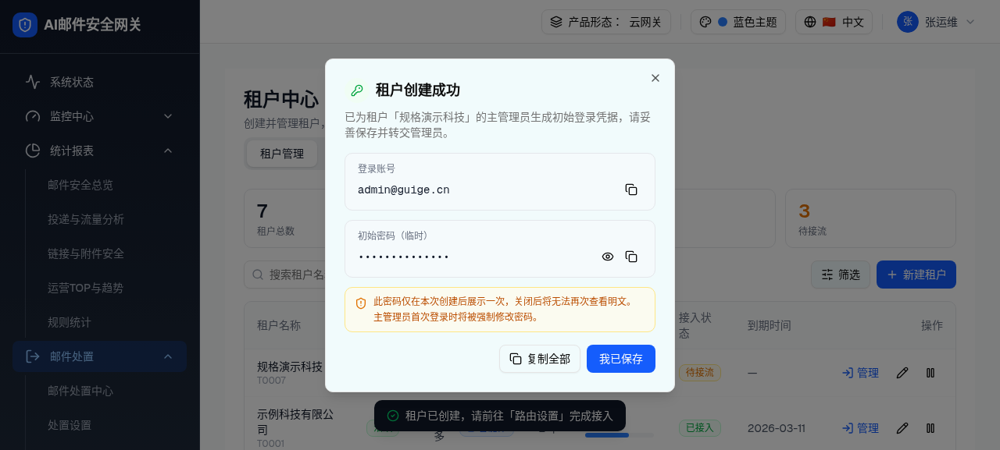
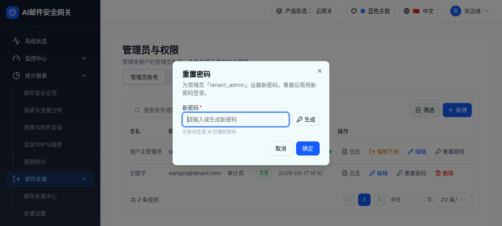
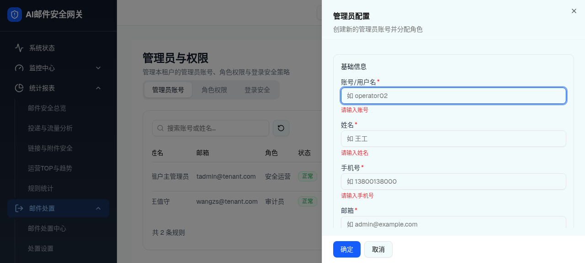

L0 路径总览：谁在哪里创建谁
核心结论：新建管理员的语义由「产品形态 × 当前视角」决定。
| 场景 | 入口 | 创建对象 | 归属 |
|---|
| 平台管理员建平台管理员 | 管理员与权限 → 平台视角 → 管理员账号 → 新建 | 平台管理员 | adminScope=platform |
| 租户管理员建租户管理员 | 管理员与权限 → 租户视角 → 管理员账号 → 新建 | 本租户管理员 | adminScope=tenant, tenantId=activeTenantId |
| 建租户时建首个管理员 | 租户中心 → 新建租户 → 填主管理员账号 → 创建 | 该租户主管理员 | isPrimary=true, mustChangePassword=true |
L1 首管理员凭据弹窗（一次性展示初始密码）
触发路径：租户中心 → 「新建租户」抽屉填写主管理员账号（如 admin@guige.cn）+ 收信域 → 点击「创建租户」。save() 生成 generateStrongPassword() 强密码、createTenantPrimaryAdmin() 入库、并弹出凭据结果对话框。
初始密码默认遮罩（●●●●）；点眼睛图标切换明文；单项复制 / 复制全部；「我已保存」关闭后不可再查看明文
✓租户创建成功
已为「规格演示科技」创建主管理员账号，请妥善保存以下登录凭据。
初始密码（临时）
••••••••••••••
⚠ 此密码仅在本次创建后展示一次，关闭后将无法再次查看明文。主管理员首次登录时将被强制修改密码。

浏览器实际渲染：租户创建成功凭据弹窗（登录账号 + 初始密码遮罩 + 琥珀安全提示 + 复制全部/我已保存）
| 元素 | 交互行为 | 说明 |
|---|
| 登录账号「复制」 | 点击 → 复制账号到剪贴板 → 短暂 Toast/按钮态反馈 | 账号即新建租户填写的主管理员邮箱 |
| 初始密码「显示/隐藏」 | 默认遮罩为圆点；点击切换明文 ⇄ 遮罩 | 降低旁观窥屏风险 |
| 初始密码「复制」 | 无论遮罩与否，复制真实明文密码 | 密码由 generateStrongPassword(14) 生成，含大小写/数字/符号、排除易混淆字符 |
| 「复制全部」 | 复制「账号 + 密码」组合文本 | 便于一次性交付 |
| 「我已保存」 | 关闭弹窗；关闭后无法再查看明文（无重新查看入口，只能到管理员账号 Tab 重置） | 一次性展示原则 |
| 安全提示 banner | 琥珀色，明示「仅此一次 + 首登强制改密」 | 对应 D-006 解决方案 |
DOM 树比对结果（凭据弹窗）
| 比对项 | demo 实际 DOM（agent-browser snapshot） | 规格描述 | 是否一致 |
|---|
| 弹窗标题 | 「租户创建成功」 | 成功标题 | 一致 |
| 登录账号 | admin@guige.cn + 复制按钮 | 账号可复制 | 一致 |
| 初始密码 | 默认遮罩 + 显示 + 复制按钮 | 遮罩 + 显示/复制 | 一致 |
| 安全提示 | 「此密码仅在本次创建后展示一次…首次登录时将被强制修改密码」 | 一次性 + 强制改密 | 一致 |
| 底部按钮 | [复制全部, 我已保存] | 复制全部 / 我已保存 | 一致 |
L2 给首管理员改密（重置密码路径）
触发路径：租户中心目标租户「管理」（代登录，setActiveTenantId(租户id) + setViewer("tenant") → 跳工作台）→ 侧栏「系统管理 > 管理员与权限」→ 管理员账号 Tab → 主管理员 tenant_admin 行「重置密码」。
可手动输入新密码，或点「生成」自动生成 16 位随机密码；确定后清除「待改密」标记
重置密码
为管理员「tenant_admin」设置新密码，重置后需用新密码登录。
需满足密码策略：8 位以上，含大小写字母、数字、特殊字符。可自动生成 16 位随机密码。

浏览器实际渲染：主管理员「tenant_admin」重置密码弹窗（新密码输入 + 生成 + 密码策略提示）
| 元素 | 交互行为 | 说明 |
|---|
| 入口按钮 | 主管理员行操作列「重置密码」（KeyRound 图标） | 主管理员行无删除按钮，但保留重置密码 |
| 新密码输入 | 手动输入；失焦/提交校验密码策略 checkPasswordAgainstPolicy，不合规 Toast 报错第一条 | 受平台登录安全基线约束 |
| 「生成」 | 自动填入 16 位随机强密码 | 省去人工构造 |
| 「确定」 | 校验通过 → 更新该管理员，清除 mustChangePassword（待改密徽标消失）→ Toast「密码已重置」→ 关闭 | 重置视为完成一次密码设置 |
| 「取消」 | 关闭弹窗，不改动 | — |
DOM 树比对结果（重置密码）
| 比对项 | demo 实际 DOM | 规格描述 | 是否一致 |
|---|
| 弹窗标题/文案 | 「为管理员『tenant_admin』设置新密码，重置后需用新密码登录」 | 设置新密码提示 | 一致 |
| 新密码输入 + 生成 | 输入框 + 「生成」按钮 + 「可自动生成 16 位随机密码」 | 输入 + 生成 16 位 | 一致 |
| 密码策略提示 | 「8 位以上，含大小写字母、数字、特殊字符」（已修复历史乱码） | 策略提示 | 一致 |
L3 给该租户再建其他管理员
触发路径：同 L2 代登录进入该租户 → 管理员账号 Tab → 右上「新建」→ 管理员配置抽屉。
角色下拉在租户视角剔除「系统管理员(role_sys)」；新管理员以 tenantId=activeTenantId 入库
管理员配置
角色与状态
角色安全运营（无「系统管理员」）
状态启用

浏览器实际渲染：租户视角「管理员配置」抽屉（基础信息 + 角色与状态；角色下拉不含系统管理员）
| 元素 | 交互行为 | 形态/角色差异 |
|---|
| 「新建」按钮 | 打开空白管理员配置抽屉，emptyDraft(scope, activeTenantId) 预置 adminScope=tenant、tenantId=activeTenantId | [租户视角] 归属本租户 |
| 角色下拉 | 租户视角 roleOptions 过滤掉 role_sys（系统管理员），仅平台审计员/安全运营/审计员/自定义运营 | [平台视角] 含系统管理员 |
| 初始密码「生成」 | 自动生成强密码 | — |
| 「确定」 | 校验后入库，新管理员出现在本租户列表；普通管理员（非 isPrimary）操作列含「删除」 | — |
DOM 树比对结果（新建管理员抽屉 · 角色隔离）
| 比对项 | demo 实际 DOM（agent-browser snapshot 角色下拉） | 规格描述 | 是否一致 |
|---|
| 角色选项集合 | 平台审计员 / 安全运营 / 审计员 / 自定义运营（无系统管理员） | 租户视角剔除 role_sys | 一致 |
| 抽屉分组 | 基础信息 + 角色与状态 | 两分组 | 一致 |
| 归属赋值 | tenantId=activeTenantId（代登录租户） | 动态租户身份 | 一致 |
Δ 差异标注与演示环境限制
| 编号 | 说明 | 状态 |
|---|
| D-006 | 初始密码明文：已由凭据弹窗一次性遮罩展示解决 | 已解决 |
| D-008 | 首管理员入库 + 代登录租户身份贯通：demo 已打通；数据依赖模块级 Mock 数组，整页刷新会重置（真实后端持久化下不存在） | 演示限制 |
| D-009 | 主管理员删除保护：isPrimary 隐藏删除按钮 + 批量删除拦截 | 已实现 |
验证方式：本层全部交互均以 agent-browser 在 http://localhost:3000 云网关·租户视角实测采集截图与 DOM，对比证据另见 screenshots/tenant-primary-admin-badge.json。